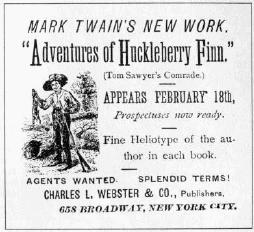

|

If you saw a publisher's recruitment ad and applied to be a book agent, you would have been sent, first, the outlines of the territory you'd be allowed to canvass, and second a kit containing the materials you needed to start going door-to-door. The most important item was the prospectus of the book you'd be selling. But subscription publishers like Elisha Bliss also sent their agents a packet of materials designed to help them sell books and make sure the firm knew how they were doing. Inside the Barrett Collection's copy of the prospectus for Life on the Mississippi -- one of the two MT books brought out by Osgood and Company -- are some of the items. Also in Barrett is a set of instructions from the American Publishing Company coaching agents in what to say to potential buyers of Following the Equator. All agents would have been sent versions of these items. In addition, as a new agent you would have probably been sent a manual about the secrets to success as a book agent. The text excerpted below is from the appendix to Hamlin Hill's Mark Twain and Elisha Bliss. |